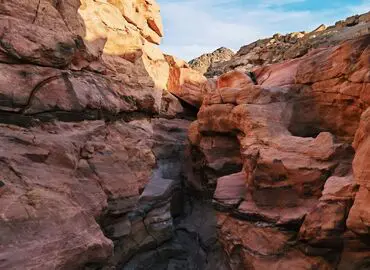

This is our places for our clints this week
|
This is frist place Located in the southern part of Egypt, Aswan is capable of giving you mixed feelings! With its Temples, Nile, and colorful folkloric Nubian village and much more, Agatha Christie was once inspired to write her well known “Death on the Nile”, and now you have the opportunity to get inspired, as well. |
This is second place Imagine yourself wondering the world’s largest open air museum! Marvelous, isn’t it? The city of hundred gates is now opened for you! Get packed and be ready to be blown away by the extraordinary architecture established all over the place witnessing the greatness of ancient ancestors. |
||
|
This is Third place Far away from the bustle of the city, If you are an adventurous soul or a relaxation seeker, Marsa Alam will definitely meet up your expectations. From super safari to snorkeling and diving, your vacation will be a lifetime experience, follow your passion before it’s too late. |
This is fourth place The pearl of the Mediterranean is now ready for true travellers to unravel its secrets. The sea is right in front of you, the sky is high and blue, what else would you need?! Qaitbey Citadel, the Great Library of Alexandria and the Roman Catacombs will add a glimpse of fantasy to the whole atmosphere. |
||
|
This is Dahab place If you are Looking for some adventures in the desserts of Egypt together with an atmosphere of tranquility, Dahab with its location on the red sea is calling for you. With a number of different spectacular islands recognized as best places |
 |
This is Alexandria place pearl of the Mediterranean is now ready for true travellers to unravel its secrets. The sea is right in front of you, the sky is high and blue, what else would you need?! Qaitbey Citadel, the Great Library of Alexandria and the Roman Catacombs will add a glimpse of fantasy to the whole atmosphere. |